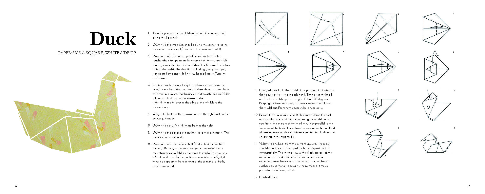
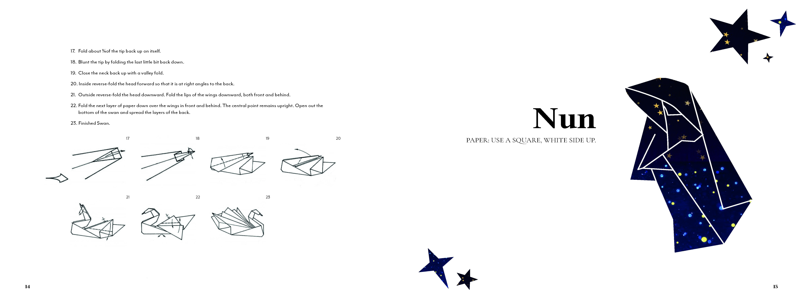
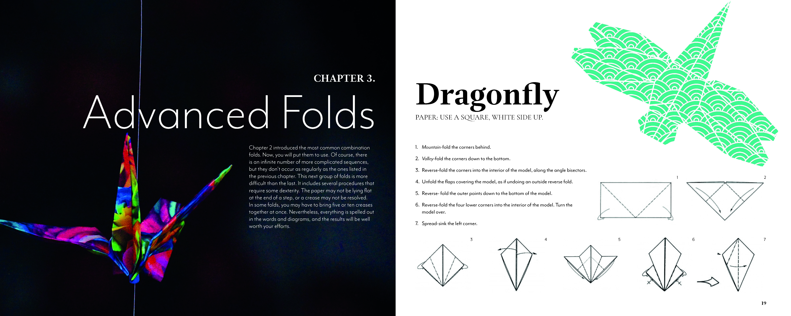

Origami Book
ART 285-Interface Design Studio
This is my last design work in school. I redesigned the book "The complete book of origami: step-by-step instructions in over 1000 diagrams: 37 original models". Although the materials and content are made with great care, with the passage of time, it no longer conforms to the aesthetics of contemporary people. In order to better integrate the picture reading experience, I changed the font and redesigned the layout.
Service: Graphic Design
Skills:Sketching, Adobe Photoshop, Adobe Illustrator, Adobe InDesign